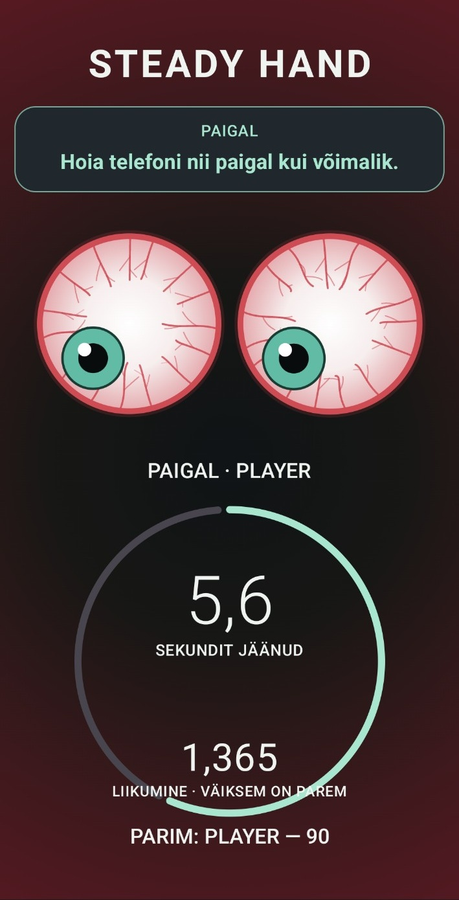

STEADY HAND
STEADY HAND on mäng, mis kasutab telefoni güroskoopi ja kiirendusandurit, et mõõta, kui stabiilselt suudad telefoni hoida.
Mäng reageerib telefoni kaldele ja käevärinale ning muudab silmade ilmet, tausta ja pingetaset vastavalt sellele, kui rahulikult või ebastabiilselt telefoni hoiad.

Kolm viisi stabiilsust proovile panna.
STEADY
Hoia telefoni võimalikult paigal.
BALANCE
Seisa ühe jala peal ja proovi samal ajal telefon stabiilsena hoida.
FOLLOW
Kalluta telefoni ekraanil näidatud suunas.
Mänguaeg
Vali 10, 15 või 20 sekundi pikkune mäng.
Kaks keelt
Mängi eesti või inglise keeles.
Silmateemad
Vali erinevate silmateemade vahel.
Stressitaust
Dünaamiline taust reageerib telefoni liikumisele.
Edetabel ja katsed
Mängusisene edetabel ja viimased katsed on kohaliku mängusessiooni jaoks.
Liikumisandurid
Mäng kasutab telefoni güroskoopi ja kiirendusandurit.
Proovi STEADY HANDi
LAE ALLA APK File🔒 Turvaline APK
APK on DEVILAATORi enda builditud ja digitaalselt allkirjastatud. Rakendus ei sisalda reklaame ega teadlikult lisatud pahavara.
APK paigaldamisel võib Android esimesel korral küsida luba rakenduste paigaldamiseks väljaspool äpipoodi.
Ilma kasutajakontota
STEADY HAND ei vaja kasutajakontot. Mäng kasutab telefoni liikumisandureid mängu ajal ning tulemused on mõeldud kohalikuks mängusessiooniks.